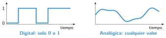

Señales digitales y analógicas
🤔 Pienso5 min
Qué hago aquí: Piensa un momento y contesta con lo que ya sabes. No pasa nada si no lo sabes: es para empezar.
Unas lámparas tienen interruptor. Otras tienen una ruedecita para dar más o menos luz. ¿Cuántas posiciones tiene cada una?
📖 Leo y aprendo15 min
Qué hago aquí: Lee despacio, mira los dibujos y los ejemplos, y quédate con la idea clave del final.
Los sensores mandan a la placa dos tipos de señales.

En la Micro:Bit:
- lectura digital pin P1 da 0 o 1.
- lectura analógica pin P1 da un número de 0 a 1023.
- escritura digital pin P0 a 1 enciende un LED.
✏️ Hago25 min
Qué hago aquí: Haz las actividades en orden. Empieza siempre por las básicas.
Completa: una señal digital tiene valores. Una analógica puede tener valor.
Marca si la señal es digital o analógica.
| Elemento | Digital | Analógica |
|---|---|---|
| Pulsador | ||
| Sensor de temperatura | ||
| Botón A de la Micro:Bit | ||
| Sensor de luz |
Vuelve a las lámparas de Pienso. ¿Cuál es digital y cuál analógica?
En MakeCode: para siempre → trazar el gráfico de barras de nivel de luz hasta 255. Mueve el control de luz del simulador. ¿Qué pasa?
Haz un programa que encienda un LED en P0 cuando pulses el botón A y lo apague al soltarlo. ¿La señal del botón es digital o analógica?
🚀 Amplío (si quieres saber más)
Qué hago aquí: ¿Has terminado? Lee la curiosidad o elige el reto. Es voluntario.
Programa un LED en P0 que brille más cuanto más oscuro esté. Pista: escritura analógica pin P0 a 1023 − 4· nivel de luz.
✅ Compruebo5 min
Qué hago aquí: Contesta sin mirar la ficha y marca cómo lo llevas.